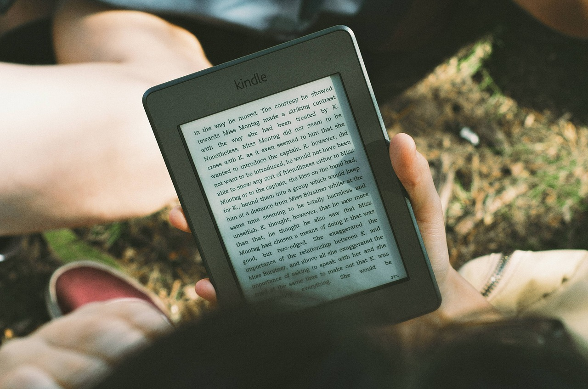

Modern Titles Turned into Movies
- Ramona the Pest (1968)
- Charlie and the Chocolate Factory/Willy Wonka and the Chocolate Factory (1964)
- Where the Wild Things Are (1963)
- The Chronicles of Narnia (1950)
- Charlotte's Web (1952)
- Harry Potter (1997)
- The Polar Express (1985)
- Matilda (1988)
- James and the Giant Peach (1961)
- The BFG (1982)
- Madeline (1939)
- Curious George (1941)
- The Rescuers (1977)
- Zenon: Girl of the 21st Century (1996)
- Basil of Baker Street (1958)
- The Brave Little Toaster (1980)
- Mrs. Frisby and the Rats of NIMH (1971)
- Zathura (2002)
- 101 Dalmations (1956)
- Jumanji (1981)
- How to Train Your Dragon (2010)
- Roll-a-Book/Dumbo, the Flying Elephant (1939)
- Shrek! (1990)
- The Last Unicorn (1968)
- Lottie and Lisa/The Parent Trap (1940)
- The Sheep-Pig/Babe (1983)
- Paddington (1958)
- The house at Pooh Corner/The Many Adventures of Winnie the Pooh (1928)
- Mary Poppins (1934)
- How the Grinch Stole Christmas (1982)
- Pippi Longstocking (1945)
- Eloise (1955)
- Babar (1937)
- The Princess Bride (1973)
- A Christmas Story/In God We Trust, All Others Pay Cash (1966)
- The Little Prince (1943)